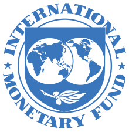
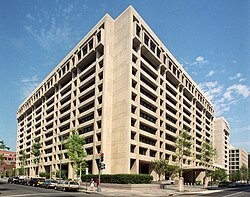

International Monetary Fund
|  | |
|  | |
| Abbreviation | IMF |
|---|---|
| Formation | 27 December 1945 |
| Type | International financial institution |
| Purpose | Promote international monetary co-operation, facilitate international trade, foster sustainable economic growth, make resources available to members experiencing balance of payments difficulties, prevent and assist with recovery from international financial crises[1] |
| Headquarters | 700 19th Street NW, Washington, D.C., U.S. |
| Coordinates | 38°53′56″N 77°2′39″W / 38.89889°N 77.04417°W |
Region | Worldwide |
Membership | 190 countries (189 UN countries and Kosovo)[2] |
Official language | English[3] |
Managing Director | Kristalina Georgieva |
First Deputy Managing Director | Gita Gopinath[4] |
Chief Economist | Pierre-Olivier Gourinchas[5] |
Main organ | Board of Governors |
Parent organization | United Nations[6][7] |
Budget (2023) | $1,295 million[8]: 60 |
Staff | 2,400[1] |
| Website | imf.org |
{kind=link}
.jpg){kind=link}
The International Monetary Fund (IMF) is a major financial agency of the United Nations, and an international financial institution funded by 190 member countries, with headquarters in Washington, D.C. It is regarded as the global lender of last resort to national governments, and a leading supporter of exchange-rate stability. Its stated mission is "working to foster global monetary cooperation, secure financial stability, facilitate international trade, promote high employment and sustainable economic growth, and reduce poverty around the world."[1][9]
Established on 27 December 1945[10] at the Bretton Woods Conference, primarily according to the ideas of Harry Dexter White and John Maynard Keynes, it started with 29 member countries and the goal of reconstructing the international monetary system after World War II. It now plays a central role in the management of balance of payments difficulties and international financial crises.[11] Through a quota system, countries contribute funds to a pool from which countries can borrow if they experience balance of payments problems. The IMF works to stabilize and foster the economies of its member countries by its use of the fund, as well as other activities such as gathering and analyzing economic statistics and surveillance of its members' economies.[12][13]
The current managing director (MD) and chairperson of the IMF is Bulgarian economist Kristalina Georgieva, who has held the post since 1 October 2019.[14] Indian-American economist Gita Gopinath, previously the chief economist, was appointed as first deputy managing director, effective 21 January 2022.[15] Pierre-Olivier Gourinchas was appointed chief economist on 24 January 2022.[16]
Functions
[edit]{kind=link}
According to the IMF itself, it works to foster global growth and economic stability by providing policy advice and financing to its members. It also works with developing countries to help them achieve macroeconomic stability and reduce poverty.[17] The rationale for this is that private international capital markets function imperfectly and many countries have limited access to financial markets. Such market imperfections, together with balance-of-payments financing, provide the justification for official financing, without which many countries could only correct large external payment imbalances through measures with adverse economic consequences.[18] The IMF provides alternate sources of financing such as the Poverty Reduction and Growth Facility.[19]
Upon the founding of the IMF, its three primary functions were:
- to oversee the fixed exchange rate arrangements between countries,[20] thus helping national governments manage their exchange rates and allowing these governments to prioritize economic growth,[21] and
- to provide short-term capital to aid the balance of payments[20] and prevent the spread of international economic crises.
- to help mend the pieces of the international economy after the Great Depression and World War II[22] as well as to provide capital investments for economic growth and projects such as infrastructure.[citation needed]
The IMF's role was fundamentally altered by the floating exchange rates after 1971. It shifted to examining the economic policies of countries with IMF loan agreements to determine whether a shortage of capital was due to economic fluctuations or economic policy. The IMF also researched what types of government policy would ensure economic recovery.[20] A particular concern of the IMF was to prevent financial crises, such as those in Mexico in 1982, Brazil in 1987, East Asia in 1997–98, and Russia in 1998, from spreading and threatening the entire global financial and currency system. The challenge was to promote and implement a policy that reduced the frequency of crises among emerging market countries, especially the middle-income countries which are vulnerable to massive capital outflows.[23] Rather than maintaining a position of oversight of only exchange rates, their function became one of surveillance of the overall macroeconomic performance of member countries. Their role became a lot more active because the IMF now manages economic policy rather than just exchange rates.[citation needed]
In addition, the IMF negotiates conditions on lending and loans under their policy of conditionality,[20][24] which was established in the 1950s.[21] Low-income countries can borrow on concessional terms, which means there is a period of time with no interest rates, through the Extended Credit Facility (ECF), the Standby Credit Facility (SCF) and the Rapid Credit Facility (RCF). Non-concessional loans, which include interest rates, are provided mainly through the Stand-By Arrangements (SBA), the Flexible Credit Line (FCL), the Precautionary and Liquidity Line (PLL), and the Extended Fund Facility. The IMF provides emergency assistance via the Rapid Financing Instrument (RFI) to members facing urgent balance-of-payments needs.[25]
Surveillance of the global economy
[edit]The IMF is mandated to oversee the international monetary and financial system and monitor the economic and financial policies of its member countries.[26] This activity is known as surveillance and facilitates international co-operation.[27] Since the demise of the Bretton Woods system of fixed exchange rates in the early 1970s, surveillance has evolved largely by way of changes in procedures rather than through the adoption of new obligations.[26] The responsibilities changed from those of guardians to those of overseers of members' policies.[citation needed]
The Fund typically analyses the appropriateness of each member country's economic and financial policies for achieving orderly economic growth, and assesses the consequences of these policies for other countries and for the global economy.[26] For instance, The IMF played a significant role in individual countries, such as Armenia and Belarus, in providing financial support to achieve stabilization financing from 2009 to 2019.[28] The maximum sustainable debt level of a polity, which is watched closely by the IMF, was defined in 2011 by IMF economists to be 120%.[29] Indeed, it was at this number that the Greek economy melted down in 2010.[30]
{kind=link}
In 1995, the International Monetary Fund began to work on data dissemination standards with the view of guiding IMF member countries to disseminate their economic and financial data to the public. The International Monetary and Financial Committee (IMFC) endorsed the guidelines for the dissemination standards and they were split into two tiers: The General Data Dissemination System (GDDS) and the Special Data Dissemination Standard (SDDS).[31]
The executive board approved the SDDS and GDDS in 1996 and 1997, respectively, and subsequent amendments were published in a revised Guide to the General Data Dissemination System. The system is aimed primarily at statisticians and aims to improve many aspects of statistical systems in a country. It is also part of the World Bank Millennium Development Goals (MDG) and Poverty Reduction Strategic Papers (PRSPs).[citation needed]
The primary objective of the GDDS is to encourage member countries to build a framework to improve data quality and statistical capacity building to evaluate statistical needs, set priorities in improving timeliness, transparency, reliability, and accessibility of financial and economic data. Some countries initially used the GDDS, but later upgraded to SDDS.[citation needed]
Some entities that are not IMF members also contribute statistical data to the systems:
- Palestinian Authority – GDDS
- Hong Kong – SDDS
- Macau – GDDS[32]
- Institutions of the European Union:
- The European Central Bank for the Eurozone – SDDS
- Eurostat for the whole EU – SDDS, thus providing data from Cyprus (not using any DDSystem on its own) and Malta (using only GDDS on its own)[citation needed]
A 2021 study found that the IMF's surveillance activities have "a substantial impact on sovereign debt with much greater impacts in emerging than high-income economies".[33]
Conditionality of loans
[edit]IMF conditionality is a set of policies or conditions that the IMF requires in exchange for financial resources.[20] The IMF does require collateral from countries for loans but also requires the government seeking assistance to correct its macroeconomic imbalances in the form of policy reform.[34] If the conditions are not met, the funds are withheld.[20][35] The concept of conditionality was introduced in a 1952 executive board decision and later incorporated into the Articles of Agreement.
Conditionality is associated with economic theory as well as an enforcement mechanism for repayment. Stemming primarily from the work of Jacques Polak, the theoretical underpinning of conditionality was the "monetary approach to the balance of payments".[21]
Structural adjustment
[edit]Some of the conditions for structural adjustment can include:
- Cutting expenditures or raising revenues, also known as austerity.
- Focusing economic output on direct export and resource extraction,
- Devaluation of currencies,
- Trade liberalisation, or lifting import and export restrictions,
- Increasing the stability of investment (by supplementing foreign direct investment with the opening of facilities for the domestic market),
- Balancing budgets and not overspending,
- Removing price controls and state subsidies,
- Privatization, or divestiture of all or part of state-owned enterprises,
- Enhancing the rights of foreign investors vis-a-vis national laws,
- Improving governance and fighting corruption,
These conditions are known as the Washington Consensus.
Benefits
[edit]These loan conditions ensure that the borrowing country will be able to repay the IMF and that the country will not attempt to solve their balance-of-payment problems in a way that would negatively impact the international economy.[36][37] The incentive problem of moral hazard—when economic agents maximise their own utility to the detriment of others because they do not bear the full consequences of their actions—is mitigated through conditions rather than providing collateral; countries in need of IMF loans do not generally possess internationally valuable collateral anyway.[37]
Conditionality also reassures the IMF that the funds lent to them will be used for the purposes defined by the Articles of Agreement and provides safeguards that the country will be able to rectify its macroeconomic and structural imbalances.[37] In the judgment of the IMF, the adoption by the member of certain corrective measures or policies will allow it to repay the IMF, thereby ensuring that the resources will be available to support other members.[35]
As of 2004[update], borrowing countries have had a good track record for repaying credit extended under the IMF's regular lending facilities with full interest over the duration of the loan. This indicates that IMF lending does not impose a burden on creditor countries, as lending countries receive market-rate interest on most of their quota subscription, plus any of their own-currency subscriptions that are loaned out by the IMF, plus all of the reserve assets that they provide the IMF.[18]
History
[edit]20th century
[edit]{kind=link}
_(53844898894).jpg){kind=link}
{kind=link}
{kind=link}
The IMF was originally laid out as a part of the Bretton Woods system exchange agreement in 1944.[38] During the Great Depression, countries sharply raised barriers to trade in an attempt to improve their failing economies. This led to the devaluation of national currencies and a decline in world trade.[39]
This breakdown in international monetary cooperation created a need for oversight. The representatives of 45 governments met at the Bretton Woods Conference in the Mount Washington Hotel in Bretton Woods, New Hampshire, in the United States, to discuss a framework for postwar international economic cooperation and how to rebuild Europe.
There were two views on the role the IMF should assume as a global economic institution. American delegate Harry Dexter White foresaw an IMF that functioned more like a bank, making sure that borrowing states could repay their debts on time.[40] Most of White's plan was incorporated into the final acts adopted at Bretton Woods. British economist John Maynard Keynes, on the other hand, imagined that the IMF would be a cooperative fund upon which member states could draw to maintain economic activity and employment through periodic crises. This view suggested an IMF that helped governments and act as the United States government had during the New Deal to the great depression of the 1930s.[40]
The IMF formally came into existence on 27 December 1945, when the first 29 countries ratified its Articles of Agreement.[41] By the end of 1946 the IMF had grown to 39 members.[42] On 1 March 1947, the IMF began its financial operations,[43] and on 8 May France became the first country to borrow from it.[42]
The IMF was one of the key organizations of the international economic system; its design allowed the system to balance the rebuilding of international capitalism with the maximization of national economic sovereignty and human welfare, also known as embedded liberalism.[21] The IMF's influence in the global economy steadily increased as it accumulated more members. Its membership began to expand in the late 1950s and during the 1960s as many African countries became independent and applied for membership. But the Cold War limited the Fund's membership, with most countries in the Soviet sphere of influence not joining until 1970s and 1980s.[39][44][45]
The Bretton Woods exchange rate system prevailed until 1971 when the United States government suspended the convertibility of the US$ (and dollar reserves held by other governments) into gold. This is known as the Nixon Shock.[39] The changes to the IMF articles of agreement reflecting these changes were ratified in 1976 by the Jamaica Accords. Later in the 1970s, large commercial banks began lending to states because they were awash in cash deposited by oil exporters. The lending of the so-called money center banks led to the IMF changing its role in the 1980s after a world recession provoked a crisis that brought the IMF back into global financial governance.[46]
In the mid-1980s, the IMF shifted its narrow focus from currency stabilization to a broader focus of promoting market-liberalizing reforms through structural adjustment programs.[47] This shift occurred without a formal renegotiation of the organization's charter or operational guidelines.[47] The Ronald Reagan administration, in particular Treasury Secretary James Baker, his assistant secretary David Mulford and deputy assistant secretary Charles Dallara, pressured the IMF to attach market-liberal reforms to the organization's conditional loans.[47]
During the 20th century, the IMF shifted its position on capital controls. Whereas the IMF permitted capital controls at its founding and throughout the 1970s, IMF staff increasingly favored free capital movement from 1980s onwards.[48] This shift happened in the aftermath of an emerging consensus in economics on the desirability of free capital movement, retirement of IMF staff hired in the 1940s and 1950s, and the recruitment of staff exposed to new thinking in economics.[48]
21st century
[edit]The IMF provided two major lending packages in the early 2000s to Argentina (during the 1998–2002 Argentine great depression) and Uruguay (after the 2002 Uruguay banking crisis).[49] However, by the mid-2000s, IMF lending was at its lowest share of world GDP since the 1970s.[50]
In May 2010, the IMF participated, in 3:11 proportion, in the first Greek bailout that totaled €110 billion, to address the great accumulation of public debt, caused by continuing large public sector deficits. As part of the bailout, the Greek government agreed to adopt austerity measures that would reduce the deficit from 11% in 2009 to "well below 3%" in 2014.[51] The bailout did not include debt restructuring measures such as a haircut, to the chagrin of the Swiss, Brazilian, Indian, Russian, and Argentinian Directors of the IMF, with the Greek authorities themselves (at the time, PM George Papandreou and Finance Minister Giorgos Papakonstantinou) ruling out a haircut.[52]
A second bailout package of more than €100 billion was agreed upon over the course of a few months from October 2011, during which time Papandreou was forced from office. The so-called Troika, of which the IMF is part, are joint managers of this programme, which was approved by the executive directors of the IMF on 15 March 2012 for XDR 23.8 billion[53] and saw private bondholders take a haircut of upwards of 50%. In the interval between May 2010 and February 2012 the private banks of Holland, France, and Germany reduced exposure to Greek debt from €122 billion to €66 billion.[52][54]
As of January 2012[update], the largest borrowers from the IMF in order were Greece, Portugal, Ireland, Romania, and Ukraine.[55]
On 25 March 2013, a €10 billion international bailout of Cyprus was agreed by the Troika, at the cost to the Cypriots of its agreement: to close the country's second-largest bank; to impose a one-time bank deposit levy on Bank of Cyprus uninsured deposits.[56][57] No insured deposit of €100k or less were to be affected under the terms of a novel bail-in scheme.[58][59]
The topic of sovereign debt restructuring was taken up by the IMF in April 2013, for the first time since 2005, in a report entitled "Sovereign Debt Restructuring: Recent Developments and Implications for the Fund's Legal and Policy Framework".[60] The paper, which was discussed by the board on 20 May,[61] summarised the recent experiences in Greece, St Kitts and Nevis, Belize, and Jamaica. An explanatory interview with deputy director Hugh Bredenkamp was published a few days later,[62] as was a deconstruction by Matina Stevis of The Wall Street Journal.[63]
In the October 2013, Fiscal Monitor publication, the IMF suggested that a capital levy capable of reducing Euro-area government debt ratios to "end-2007 levels" would require a very high tax rate of about 10%.[64]
The Fiscal Affairs department of the IMF, headed at the time by Acting Director Sanjeev Gupta, produced a January 2014 report entitled "Fiscal Policy and Income Inequality" that stated that "Some taxes levied on wealth, especially on immovable property, are also an option for economies seeking more progressive taxation ... Property taxes are equitable and efficient, but underutilized in many economies ... There is considerable scope to exploit this tax more fully, both as a revenue source and as a redistributive instrument."[65]
At the end of March 2014, the IMF secured an $18 billion bailout fund for the provisional government of Ukraine in the aftermath of the Revolution of Dignity.[66][67]
Response and analysis of coronavirus
[edit]In late 2019, the IMF estimated global growth in 2020 to reach 3.4%, but due to the coronavirus, in November 2020, it expected the global economy to shrink by 4.4%.[68][69]
In March 2020, Kristalina Georgieva announced that the IMF stood ready to mobilize $1 trillion as its response to the COVID-19 pandemic.[70] This was in addition to the $50 billion fund it had announced two weeks earlier,[71] of which $5 billion had already been requested by Iran.[72] One day earlier on 11 March, the UK called to pledge £150 million to the IMF catastrophe relief fund.[73] It came to light on 27 March that "more than 80 poor and middle-income countries" had sought a bailout due to the coronavirus.[74]
On 13 April 2020, the IMF said that it "would provide immediate debt relief to 25 member countries under its Catastrophe Containment and Relief Trust (CCRT)" programme.[75]
Member countries
[edit].png){kind=link}
Not all member countries of the IMF are sovereign states, and therefore not all "member countries" of the IMF are members of the United Nations.[77] Amidst "member countries" of the IMF that are not member states of the UN are non-sovereign areas with special jurisdictions that are officially under the sovereignty of full UN member states, such as Aruba, Curaçao, Hong Kong, and Macao, as well as Kosovo.[78][79] The corporate members appoint ex-officio voting members, who are listed below. All members of the IMF are also International Bank for Reconstruction and Development (IBRD) members and vice versa.[80]
Former members are Cuba (which left in 1964),[81] and Taiwan, which was ejected from the IMF[82] in 1980 after losing the support of the then United States President Jimmy Carter and was replaced by the People's Republic of China.[83] However, "Taiwan Province of China" is still listed in the official IMF indices.[84] Poland withdrew in 1950—allegedly pressured by the Soviet Union—but returned in 1986. The former Czechoslovakia was expelled in 1954 for "failing to provide required data" and was readmitted in 1990, after the Velvet Revolution.[85]
Apart from Cuba, the other UN states that do not belong to the IMF are Liechtenstein, Monaco and North Korea. However, Andorra became the 190th member on 16 October 2020.[86][87]
Qualifications
[edit]Any country may apply to be a part of the IMF. Post-IMF formation, in the early postwar period, rules for IMF membership were left relatively loose. Members needed to make periodic membership payments towards their quota, to refrain from currency restrictions unless granted IMF permission, to abide by the Code of Conduct in the IMF Articles of Agreement, and to provide national economic information. However, stricter rules were imposed on governments that applied to the IMF for funding.[21]
The countries that joined the IMF between 1945 and 1971 agreed to keep their exchange rates secured at rates that could be adjusted only to correct a "fundamental disequilibrium" in the balance of payments, and only with the IMF's agreement.[88]
Benefits
[edit]Member countries of the IMF have access to information on the economic policies of all member countries, the opportunity to influence other members' economic policies, technical assistance in banking, fiscal affairs, and exchange matters, financial support in times of payment difficulties, and increased opportunities for trade and investment.[89]
Personnel
[edit]This section needs additional citations for verification. (February 2018) |
Board of Governors
[edit]The board of governors consists of one governor and one alternate governor for each member country. Each member country appoints its two governors. The Board normally meets once a year and is responsible for electing or appointing an executive director to the executive board. While the board of governors is officially responsible for approving quota increases, special drawing right allocations, the admittance of new members, compulsory withdrawal of members, and amendments to the Articles of Agreement and By-Laws, in practice it has delegated most of its powers to the IMF's executive board.[90]
The board of governors is advised by the International Monetary and Financial Committee and the Development Committee. The International Monetary and Financial Committee has 24 members and monitors developments in global liquidity and the transfer of resources to developing countries.[91] The Development Committee has 25 members and advises on critical development issues and on financial resources required to promote economic development in developing countries.
The board of governors reports directly to the managing director of the IMF, Kristalina Georgieva.[91]
Executive Board
[edit]24 Executive Directors make up the executive board. The executive directors represent all 190 member countries in a geographically based roster.[92] Countries with large economies have their own executive director, but most countries are grouped in constituencies representing four or more countries.[90]
Following the 2008 Amendment on Voice and Participation which came into effect in March 2011,[93] seven countries each appoint an executive director: the United States, Japan, China, Germany, France, the United Kingdom, and Saudi Arabia.[92] The remaining 17 Directors represent constituencies consisting of 2 to 23 countries. This Board usually meets several times each week.[94] The board membership and constituency is scheduled for periodic review every eight years.[95]
| Country | Region | Number of Member(s) Represented | Director | Country with Most Votes |
|---|---|---|---|---|
| United States | United States | 1 | Mark Rosen | United States |
| Japan | Japan | 1 | Masaaki Kaizuka | Japan |
| China | China | 1 | Jin Zhongxia | China |
| Belgium | Benelux, Israel, and Eastern Europe | 15 | Anthony De Lannoy | Netherlands |
| Germany | Germany | 1 | Steffen Meyer | Germany |
| Colombia | Spain and Central America | 8 | Leonardo Villar | Spain |
| Indonesia | Southeast Asia | 13 | Juda Agung | Indonesia |
| Italy | Mediterranean Europe | 6 | Domenico G. Fanizza | Italy |
| France | France | 1 | Herve de Villeroche | France |
| United Kingdom | United Kingdom | 1 | Shona E. Riach | United Kingdom |
| Australia | Far East | 15 | Nigel Ray | South Korea |
| Canada | North Atlantic and the Caribbean | 12 | Louise Levonian | Canada |
| Sweden | Northern Europe | 8 | Thomas Östros | Sweden |
| Turkey | Central Europe | 8 | Raci Kaya | Turkey |
| Brazil | Northern South America | 11 | Alexandre Tombini | Brazil |
| India | Indian subcontinent | 4 | Surjit Bhalla | India |
| South Africa | Africa 1 | 23 | Dumisani Mahlinza | South Africa |
| Switzerland | Switzerland, Poland, and the Near East | 9 | Paul Inderbinen | Switzerland |
| Russia | Russia | 2 | Aleksei V. Mozhin | Russia |
| Iran | Iran and the Middle East | 8 | Jafar Mojarrad | Iran |
| Egypt | North Africa and the Middle East | 11 | Hazem Beblawi | United Arab Emirates |
| Saudi Arabia | Saudi Arabia | 1 | Maher Mouminah | Saudi Arabia |
| Mauritania | Africa 2 | 23 | Mohamed-Lemine Raghani | Democratic Republic of the Congo |
| Argentina | Southern South America | 6 | Gabriel Lopetegui | Argentina |
Managing Director
[edit]The IMF is led by a managing director, who is head of the staff and serves as chairman of the executive board. The managing director is the most powerful position at the IMF.[96] Historically, the IMF's managing director has been a European citizen and the president of the World Bank has been an American citizen. However, this standard is increasingly being questioned and competition for these two posts may soon open up to include other qualified candidates from any part of the world.[97][98] In August 2019, the International Monetary Fund has removed the age limit which is 65 or over for its managing director position.[99]
In 2011, the world's largest developing countries, the BRIC states, issued a statement declaring that the tradition of appointing a European as managing director undermined the legitimacy of the IMF and called for the appointment to be merit-based.[97][100]
List of Managing Directors
[edit]| Term | Dates | Name | Citizenship | Background |
|---|---|---|---|---|
| 1 | 6 May 1946 – 5 May 1951 | Camille Gutt | Politician, Economist, Lawyer, Economics Minister, Finance Minister | |
| 2 | 3 August 1951 – 3 October 1956 | Ivar Rooth | Economist, Lawyer, Central Banker | |
| 3 | 21 November 1956 – 5 May 1963 | Per Jacobsson | Economist, Lawyer, Academic, League of Nations, BIS | |
| 4 | 1 September 1963 – 31 August 1973 | Pierre-Paul Schweitzer | Lawyer, Businessman, Civil Servant, Central Banker | |
| 5 | 1 September 1973 – 18 June 1978 | Johan Witteveen | Politician, Economist, Academic, Finance Minister, Deputy Prime Minister, CPB | |
| 6 | 18 June 1978 – 15 January 1987 | Jacques de Larosière | Businessman, Civil Servant, Central Banker | |
| 7 | 16 January 1987 – 14 February 2000 | Michel Camdessus | Economist, Civil Servant, Central Banker | |
| 8 | 1 May 2000 – 4 March 2004 | Horst Köhler | Politician, Economist, Civil Servant, EBRD, President | |
| 9 | 7 June 2004 – 31 October 2007 | Rodrigo Rato | Politician, Businessman, Economics Minister, Finance Minister, Deputy Prime Minister | |
| 10 | 1 November 2007 – 18 May 2011 | Dominique Strauss-Kahn | Politician, Economist, Lawyer, Businessman, Economics Minister, Finance Minister | |
| 11 | 5 July 2011 – 12 September 2019 | Christine Lagarde | Politician, Lawyer, Finance Minister | |
| 12 | 1 October 2019 – present | Kristalina Georgieva | Politician, Economist |
{kind=link}
Former managing director Dominique Strauss-Kahn was arrested in connection with charges of sexually assaulting a New York hotel room attendant and resigned on 18 May. The charges were later dropped.[101] On 28 June 2011 Christine Lagarde was confirmed as managing director of the IMF for a five-year term starting on 5 July 2011.[102][103] She was re-elected by consensus for a second five-year term, starting 5 July 2016, being the only candidate nominated for the post of managing director.[104]
First Deputy Managing Director
[edit]The managing director is assisted by a First Deputy managing director (FDMD) who, by convention, has always been a citizen of the United States.[105] Together, the managing director and their First Deputy lead the senior management of the IMF.[106] Like the managing director, the First Deputy traditionally serves a five-year term.
List of First Deputy Managing Directors
[edit]| No. | Dates | Name | Citizenship | Background |
|---|---|---|---|---|
| 1 | 9 February 1949 – 24 January 1952 | Andrew Overby | Banker, Senior U.S. Treasury Official | |
| 2 | 16 March 1953 – 31 October 1962 | Merle Cochran | U.S. Foreign Service Officer | |
| 3 | 1 November 1962 – 28 February 1974 | Frank Southard | Economist, Civil Servant | |
| 4 | 1 March 1974 – 31 May 1984 | William Dale | Civil Servant | |
| 5 | 1 June 1984 – 31 August 1994 | Richard Erb | Economist, White House Official | |
| 6 | 1 September 1994 – 31 August 2001 | Stanley Fischer | Economist, Central Banker, Banker | |
| 7 | 1 September 2001 – 31 August 2006 | Anne Kreuger | Economist | |
| 8 | 17 July 2006 – 11 November 2011 | John Lipsky | Economist | |
| 9 | 1 September 2011 – 28 February 2020 | David Lipton | Economist, Senior U.S. Treasury Official | |
| 10 | 20 March 2020 – 20 January 2022 | Geoffrey Okamoto | Senior U.S. Treasury Official, Bank Consultant | |
| 11 | 21 January 2022 – present | Gita Gopinath | Professor at Harvard University's Economics department Chief Economist of IMF |
Chief Economist
[edit]The chief economist leads the research division of the IMF and is a "senior official" of the IMF.[107]
List of Chief Economists
[edit]| Term | Dates | Name | Citizenship |
|---|---|---|---|
| 1 | 1946–1958 | Edward Bernstein[108] | |
| 2 | 1958–1980 | Jacques Polak | |
| 3 | 1980–1987 | William Hood[109][110] | |
| 4 | 1987–1991 | Jacob Frenkel[111] | |
| 5 | August 1991 – 29 June 2001 | Michael Mussa[112] | |
| 6 | August 2001 – September 2003 | Kenneth Rogoff[113] | |
| 7 | September 2003 – January 2007 | Raghuram Rajan[114] | |
| 8 | March 2007 – 31 August 2008 | Simon Johnson[115] | |
| 9 | 1 September 2008 – 8 September 2015 | Olivier Blanchard[116] | |
| 10 | 8 September 2015 – 31 December 2018 | Maurice Obstfeld[117] | |
| 11 | 1 January 2019 – 21 January 2022 | Gita Gopinath[118] | |
| 12 | 24 January 2022 – present | Pierre-Olivier Gourinchas[119] |
IMF staff
[edit]IMF staff have considerable autonomy and are known to shape IMF policy. According to Jeffrey Chwieroth, "It is the staff members who conduct the bulk of the IMF's tasks; they formulate policy proposals for consideration by member states, exercise surveillance, carry out loan negotiations and design the programs, and collect and systematize detailed information."[120] Most IMF staff are economists.[121] According to a 1968 study, nearly 60% of staff were from English-speaking developed countries.[122] By 2004, between 40 and 50% of staff were from English-speaking developed countries.[122]
A 1996 study found that 90% of new staff with a PhD obtained them from universities in the United States or Canada.[122] A 1999 study found that none of the new staff with a PhD obtained their PhD in the Global South.[122]
Voting power
[edit]Voting power in the IMF is based on a quota system. Each member has a number of basic votes, equal to 5.502% of the total votes,[123] plus one additional vote for each special drawing right (SDR) of 100,000 of a member country's quota.[124] The SDR is the unit of account of the IMF and represents a potential claim to currency. It is based on a basket of key international currencies. The basic votes generate a slight bias in favour of small countries, but the additional votes determined by SDR outweigh this bias.[124] Changes in the voting shares require approval by a super-majority of 85% of voting power.[11]
In December 2015, the United States Congress adopted a legislation authorising the 2010 Quota and Governance Reforms. As a result,
- all 190 members' quotas will increase from a total of about XDR 238.5 billion to about XDR 477 billion, while the quota shares and voting power of the IMF's poorest member countries will be protected.
- more than 6 percent of quota shares will shift to dynamic emerging market and developing countries and also from over-represented to under-represented members.
- four emerging market countries (Brazil, China, India, and Russia) will be among the ten largest members of the IMF. Other top 10 members are the United States, Japan, Germany, France, the United Kingdom and Italy.[125]
Effects of the quota system
[edit]The IMF's quota system was created to raise funds for loans.[21] Each IMF member country is assigned a quota, or contribution, that reflects the country's relative size in the global economy. Each member's quota also determines its relative voting power. Thus, financial contributions from member governments are linked to voting power in the organization.[124]
This system follows the logic of a shareholder-controlled organization: wealthy countries have more say in the making and revision of rules.[21] Since decision making at the IMF reflects each member's relative economic position in the world, wealthier countries that provide more money to the IMF have more influence than poorer members that contribute less; nonetheless, the IMF focuses on redistribution.[124]
Inflexibility of voting power
[edit]Quotas are normally reviewed every five years and can be increased when deemed necessary by the board of governors. IMF voting shares are relatively inflexible: countries that grow economically have tended to become under-represented as their voting power lags behind.[11] Currently, reforming the representation of developing countries within the IMF has been suggested.[124] These countries' economies represent a large portion of the global economic system but this is not reflected in the IMF's decision-making process through the nature of the quota system. Joseph Stiglitz argues, "There is a need to provide more effective voice and representation for developing countries, which now represent a much larger portion of world economic activity since 1944, when the IMF was created."[126] In 2008, a number of quota reforms were passed including shifting 6% of quota shares to dynamic emerging markets and developing countries.[127]
Overcoming borrower/creditor divide
[edit]The IMF's membership is divided along income lines: certain countries provide financial resources while others use these resources. Both developed country "creditors" and developing country "borrowers" are members of the IMF. The developed countries provide the financial resources but rarely enter into IMF loan agreements; they are the creditors. Conversely, the developing countries use the lending services but contribute little to the pool of money available to lend because their quotas are smaller; they are the borrowers. Thus, tension is created around governance issues because these two groups, creditors and borrowers, have fundamentally different interests.[124]
The criticism is that the system of voting power distribution through a quota system institutionalizes borrower subordination and creditor dominance. The resulting division of the IMF's membership into borrowers and non-borrowers has increased the controversy around conditionality because the borrowers are interested in increasing loan access while creditors want to maintain reassurance that the loans will be repaid.[128]
Use
[edit]In 2008, the SAIS Review of International Affairs revealed that the average overall use of IMF credit per decade increased, in real terms, by 21% between the 1970s and 1980s, and increased again by just over 22% from the 1980s to the 1991–2005 period. Another study has suggested that since 1950 the continent of Africa alone has received $300 billion from the IMF, the World Bank, and affiliate institutions.[129]
A study by Bumba Mukherjee found that developing democratic countries benefit more from IMF programs than developing autocratic countries because policy-making, and the process of deciding where loaned money is used, is more transparent within a democracy.[129] One study done by Randall Stone found that although earlier studies found little impact of IMF programs on balance of payments, more recent studies using more sophisticated methods and larger samples "usually found IMF programs improved the balance of payments".[38]
Exceptional Access Framework – sovereign debt
[edit]The Exceptional Access Framework was created in 2003 when John B. Taylor was Under Secretary of the US Treasury for International Affairs. The new Framework became fully operational in February 2003 and it was applied in the subsequent decisions on Argentina and Brazil.[130] Its purpose was to place some sensible rules and limits on the way the IMF makes loans to support governments with debt problem—especially in emerging markets—and thereby move away from the bailout mentality of the 1990s. Such a reform was essential for ending the crisis atmosphere that then existed in emerging markets. The reform was closely related to and put in place nearly simultaneously with the actions of several emerging market countries to place collective action clauses in their bond contracts.
In 2010, the framework was abandoned so the IMF could make loans to Greece in an unsustainable and political situation.[131][132]
The topic of sovereign debt restructuring was taken up by IMF staff in April 2013 for the first time since 2005, in a report entitled "Sovereign Debt Restructuring: Recent Developments and Implications for the Fund's Legal and Policy Framework".[60] The paper, which was discussed by the board on 20 May,[61] summarised the recent experiences in Greece, St Kitts and Nevis, Belize, and Jamaica. An explanatory interview with deputy director Hugh Bredenkamp was published a few days later,[62] as was a deconstruction by Matina Stevis of The Wall Street Journal.[63]
The staff was directed to formulate an updated policy, which was accomplished on 22 May 2014 with a report entitled "The Fund's Lending Framework and Sovereign Debt: Preliminary Considerations", and taken up by the executive board on 13 June.[133] The staff proposed that "in circumstances where a (Sovereign) member has lost market access and debt is considered sustainable ... the IMF would be able to provide Exceptional Access on the basis of a debt operation that involves an extension of maturities", which was labeled a "reprofiling operation". These reprofiling operations would "generally be less costly to the debtor and creditors—and thus to the system overall—relative to either an upfront debt reduction operation or a bail-out that is followed by debt reduction ... (and) would be envisaged only when both (a) a member has lost market access and (b) debt is assessed to be sustainable, but not with high probability ... Creditors will only agree if they understand that such an amendment is necessary to avoid a worse outcome: namely, a default and/or an operation involving debt reduction ... Collective action clauses, which now exist in most—but not all—bonds would be relied upon to address collective action problems."[133]
Impact
[edit]According to a 2002 study by Randall W. Stone, the academic literature on the IMF shows "no consensus on the long-term effects of IMF programs on growth".[134]
Some research has found that IMF loans can reduce the chance of a future banking crisis,[135] while other studies have found that they can increase the risk of political crises.[136] IMF programs can reduce the effects of a currency crisis.[137]
Some research has found that IMF programs are less effective in countries which possess a developed-country patron (be it by foreign aid, membership of postcolonial institutions or UN voting patterns), seemingly due to this patron allowing countries to flaunt IMF program rules as these rules are not consistently enforced.[138] Some research has found that IMF loans reduce economic growth due to creating an economic moral hazard, reducing public investment, reducing incentives to create a robust domestic policies and reducing private investor confidence.[139] Other research has indicated that IMF loans can have a positive impact on economic growth and that their effects are highly nuanced.[140]
Criticisms
[edit].png){kind=link}
Overseas Development Institute (ODI) research undertaken in 1980 included criticisms of the IMF which support the analysis that it is a pillar of what activist Titus Alexander calls global apartheid.[141]
- Developed countries were seen to have a more dominant role and control over less developed countries (LDCs).
- The Fund worked on the incorrect assumption that all payments disequilibria were caused domestically. The Group of 24 (G-24), on behalf of LDC members, and the United Nations Conference on Trade and Development (UNCTAD) complained that the IMF did not distinguish sufficiently between disequilibria with predominantly external as opposed to internal causes. This criticism was voiced in the aftermath of the 1973 oil crisis. Then LDCs found themselves with payment deficits due to adverse changes in their terms of trade, with the Fund prescribing stabilization programmes similar to those suggested for deficits caused by government over-spending. Faced with long-term, externally generated disequilibria, the G-24 argued for more time for LDCs to adjust their economies.
- Some IMF policies may be anti-developmental; the report said that deflationary effects of IMF programmes quickly led to losses of output and employment in economies where incomes were low and unemployment was high. Moreover, the burden of the deflation is disproportionately borne by the poor.
- The IMF's initial policies were based in theory and influenced by differing opinions and departmental rivalries. Critics suggest that its intentions to implement these policies in countries with widely varying economic circumstances were misinformed and lacked economic rationale.
ODI conclusions were that the IMF's very nature of promoting market-oriented approaches attracted unavoidable criticism. On the other hand, the IMF could serve as a scapegoat while allowing governments to blame international bankers. The ODI conceded that the IMF was insensitive to political aspirations of LDCs while its policy conditions were inflexible.[142]
Argentina, which had been considered by the IMF to be a model country in its compliance to policy proposals by the Bretton Woods institutions, experienced a catastrophic economic crisis in 2001,[143] which some believe to have been caused by IMF-induced budget restrictions—which undercut the government's ability to sustain national infrastructure even in crucial areas such as health, education, and security—and privatisation of strategically vital national resources.[144] Others attribute the crisis to Argentina's misdesigned fiscal federalism, which caused subnational spending to increase rapidly.[145] The crisis added to widespread hatred of this institution in Argentina and other South American countries, with many blaming the IMF for the region's economic problems. The current—as of early 2006—trend toward moderate left-wing governments in the region and a growing concern with the development of a regional economic policy largely independent of big business pressures has been ascribed to this crisis.[citation needed]
In 2006, a senior ActionAid policy analyst Akanksha Marphatia stated that IMF policies in Africa undermine any possibility of meeting the Millennium Development Goals (MDGs) due to imposed restrictions that prevent spending on important sectors, such as education and health.[146]
In an interview (2008-05-19), the former Romanian Prime Minister Călin Popescu-Tăriceanu claimed that "Since 2005, IMF is constantly making mistakes when it appreciates the country's economic performances".[147] Former Tanzanian President Julius Nyerere, who claimed that debt-ridden African states were ceding sovereignty to the IMF and the World Bank, famously asked, "Who elected the IMF to be the ministry of finance for every country in the world?"[148][149]
Former chief economist of IMF and former Reserve Bank of India (RBI) Governor Raghuram Rajan who predicted the financial crisis of 2007–08 criticised the IMF for remaining a sideline player to the developed world. He criticised the IMF for praising the monetary policies of the US, which he believed were wreaking havoc in emerging markets.[150] He had been critical of "ultra-loose money policies" of some unnamed countries.[151][152]
Countries such as Zambia have not received proper aid with long-lasting effects, leading to concern from economists. Since 2005, Zambia (as well as 29 other African countries) did receive debt write-offs, which helped with the country's medical and education funds. However, Zambia returned to a debt of over half its GDP in less than a decade. American economist William Easterly, sceptical of the IMF's methods, had initially warned that "debt relief would simply encourage more reckless borrowing by crooked governments unless it was accompanied by reforms to speed up economic growth and improve governance", according to The Economist.[153]
Conditionality
[edit]The IMF has been criticised for being "out of touch" with local economic conditions, cultures, and environments in the countries they are requiring policy reform.[20] The economic advice the IMF gives might not always take into consideration the difference between what spending means on paper and how it is felt by citizens.[154] Countries charge that with excessive conditionality, they do not "own" the programmes and the links are broken between a recipient country's people, its government, and the goals being pursued by the IMF.[155]
Jeffrey Sachs argues that the IMF's "usual prescription is 'budgetary belt tightening to countries who are much too poor to own belts'".[154] Sachs wrote that the IMF's role as a generalist institution specialising in macroeconomic issues needs reform. Conditionality has also been criticised because a country can pledge collateral of "acceptable assets" to obtain waivers—if one assumes that all countries are able to provide "acceptable collateral".[37]
One view is that conditionality undermines domestic political institutions.[156] The recipient governments are sacrificing policy autonomy in exchange for funds, which can lead to public resentment of the local leadership for accepting and enforcing the IMF conditions. Political instability can result from more leadership turnover as political leaders are replaced in electoral backlashes.[20] IMF conditions are often criticised for reducing government services, thus increasing unemployment.[21]
Another criticism is that IMF policies are only designed to address poor governance, excessive government spending, excessive government intervention in markets, and too much state ownership.[154] This assumes that this narrow range of issues represents the only possible problems; everything is standardised and differing contexts are ignored.[154] A country may also be compelled to accept conditions it would not normally accept had they not been in a financial crisis in need of assistance.[35]
On top of that, regardless of what methodologies and data sets used, it comes to same the conclusion of exacerbating income inequality. With Gini coefficient, it became clear that countries with IMF policies face increased income inequality.[157]
It is claimed that conditionalities hinder social stability and hence inhibit the stated goals of the IMF, while Structural Adjustment Programmes lead to an increase in poverty in recipient countries.[158] The IMF sometimes advocates "austerity programmes", cutting public spending and increasing taxes even when the economy is weak, to bring budgets closer to a balance, thus reducing budget deficits. Countries are often advised to lower their corporate tax rate. In Globalization and Its Discontents, Joseph E. Stiglitz, former chief economist and senior vice-president at the World Bank, criticises these policies.[159] He argues that by converting to a more monetarist approach, the purpose of the fund is no longer valid, as it was designed to provide funds for countries to carry out Keynesian reflations, and that the IMF "was not participating in a conspiracy, but it was reflecting the interests and ideology of the Western financial community."[160]
Stiglitz concludes, "Modern high-tech warfare is designed to remove physical contact: dropping bombs from 50,000 feet ensures that one does not 'feel' what one does. Modern economic management is similar: from one's luxury hotel, one can callously impose policies about which one would think twice if one knew the people whose lives one was destroying."[159]
The researchers Eric Toussaint and Damien Millet argue that the IMF's policies amount to a new form of colonisation that does not need a military presence:
Following the exigencies of the governments of the richest companies, the IMF, permitted countries in crisis to borrow in order to avoid default on their repayments. Caught in the debt's downward spiral, developing countries soon had no other recourse than to take on new debt in order to repay the old debt. Before providing them with new loans, at higher interest rates, future leaders asked the IMF, to intervene with the guarantee of ulterior reimbursement, asking for a signed agreement with the said countries. The IMF thus agreed to restart the flow of the 'finance pump' on condition that the concerned countries first use this money to reimburse banks and other private lenders, while restructuring their economy at the IMF's discretion: these were the famous conditionalities, detailed in the Structural Adjustment Programmes. The IMF and its ultra-liberal experts took control of the borrowing countries' economic policies. A new form of colonisation was thus instituted. It was not even necessary to establish an administrative or military presence; the debt alone maintained this new form of submission.[161]
International politics play an important role in IMF decision making. The clout of member states is roughly proportional to its contribution to IMF finances. The United States has the greatest number of votes and therefore wields the most influence. Domestic politics often come into play, with politicians in developing countries using conditionality to gain leverage over the opposition to influence policy.[162][163]
Academic Jeremy Garlick cites IMF loans to South Korea during the 1997 Asian financial crisis as widely perceived by the South Korean public as a debt-trap.[164]: 89 Garlick writes that the public was generally bitter about submitting to the conditions imposed by the IMF, which required South Korea to radically restructure its economy and consult with the IMF before making economic decisions until the debt was repaid.[164]: 89
In 2016, the IMF's research department published a report titled "Neoliberalism: Oversold?" which, while praising some aspects of the "neoliberal agenda", claims that the organisation has been "overselling" fiscal austerity policies and financial deregulation, which they claim has exacerbated both financial crises and economic inequality around the world.[165][166][167]
In 2020 and 2021, Oxfam criticized the IMF for forcing tough austerity measures on many low income countries during the COVID-19 pandemic, despite forcing cuts to healthcare spending, would hamper the recipient's response to the pandemic.[168][169]
Support of dictatorships
[edit]The role of the Bretton Woods institutions has been controversial since the late Cold War, because of claims that the IMF policy makers supported military dictatorships friendly to American and European corporations, but also other anti-communist and Communist regimes (such as Mobutu's Zaire and Ceaușescu's Romania, respectively). Critics also claim that the IMF is generally apathetic or hostile to human rights, and labour rights. The controversy has helped spark the anti-globalization movement.
An example of IMF's support for a dictatorship was its ongoing support for Mobutu's rule in Zaire, although its own envoy, Erwin Blumenthal, provided a sobering report about the entrenched corruption and embezzlement and the inability of the country to pay back any loans.[170]
Arguments in favour of the IMF say that economic stability is a precursor to democracy; however, critics highlight various examples in which democratised countries fell after receiving IMF loans.[171]
A 2017 study found no evidence of IMF lending programs undermining democracy in borrowing countries.[172] To the contrary, it found "evidence for modest but definitively positive conditional differences in the democracy scores of participating and non-participating countries".[172]
On 28 June 2021, the IMF approved a US$1 billion loan to the Ugandan government despite protests from Ugandans in Washington, London and South Africa.[173][174]
Impact on access to food
[edit]A number of civil society organisations[175] have criticised the IMF's policies for their impact on access to food, particularly in developing countries. In October 2008, former United States president Bill Clinton delivered a speech to the United Nations on World Food Day, criticising the World Bank and IMF for their policies on food and agriculture:
We need the World Bank, the IMF, all the big foundations, and all the governments to admit that, for 30 years, we all blew it, including me when I was president. We were wrong to believe that food was like some other product in international trade, and we all have to go back to a more responsible and sustainable form of agriculture.
— Former U.S. president Bill Clinton, Speech at United Nations World Food Day, October 16, 2008[176]
The FPIF remarked that there is a recurring pattern: "the destabilization of peasant producers by a one-two punch of IMF-World Bank structural adjustment programs that gutted government investment in the countryside followed by the massive influx of subsidized U.S. and European Union agricultural imports after the WTO's Agreement on Agriculture pried open markets."[177]
Impact on public health
[edit]A 2009 study concluded that the strict conditions resulted in thousands of deaths in Eastern Europe by tuberculosis as public health care had to be weakened. In the 21 countries to which the IMF had given loans, tuberculosis deaths rose by 16.6%.[178] A 2017 systematic review on studies conducted on the impact that Structural adjustment programs have on child and maternal health found that these programs have a detrimental effect on maternal and child health among other adverse effects.[179]
Reform
[edit]Function and policies
[edit]The IMF is only one of many international organisations, and it is a generalist institution that deals only with macroeconomic issues; its core areas of concern in developing countries are very narrow. One proposed reform is a movement towards close partnership with other specialist agencies such as UNICEF, the Food and Agriculture Organization (FAO), and the United Nations Development Programme (UNDP).[154]
Jeffrey Sachs argues in The End of Poverty that the IMF and the World Bank have "the brightest economists and the lead in advising poor countries on how to break out of poverty, but the problem is development economics".[154] Development economics needs the reform, not the IMF. He also notes that IMF loan conditions should be paired with other reforms—e.g., trade reform in developed nations, debt cancellation, and increased financial assistance for investments in basic infrastructure.[154] IMF loan conditions cannot stand alone and produce change; they need to be partnered with other reforms or other conditions as applicable.[11]
U.S. influence and voting reform
[edit]The scholarly consensus is that IMF decision-making is not simply technocratic, but also guided by political and economic concerns.[180] The United States is the IMF's most powerful member, and its influence reaches even into decision-making concerning individual loan agreements.[181] The U.S. has historically been openly opposed to losing what Treasury Secretary Jacob Lew described in 2015 as its "leadership role" at the IMF, and the U.S.' "ability to shape international norms and practices".[182]
Emerging markets were not well-represented for most of the IMF's history: Despite being the most populous country, China's vote share was the sixth largest; Brazil's vote share was smaller than Belgium's.[183] Reforms to give more powers to emerging economies were agreed by the G20 in 2010. The reforms could not pass, however, until they were ratified by the United States Congress,[184][185][186] since 85% of the Fund's voting power was required for the reforms to take effect,[187] and the Americans held more than 16% of voting power at the time.[2] After repeated criticism,[188][189] the U.S. finally ratified the voting reforms at the end of 2015.[190] The OECD countries maintained their overwhelming majority of voting share, and the U.S. in particular retained its share at over 16%.[191]
The criticism of the American- and European-dominated IMF has led to what some consider "disenfranchising the world" from the governance of the IMF. Raúl Prebisch, the founding secretary-general of the UN Conference on Trade and Development (UNCTAD), wrote that one of "the conspicuous deficiencies of the general economic theory, from the point of view of the periphery, is its false sense of universality".[192]
IMF and globalization
[edit]Globalization encompasses three institutions: global financial markets and transnational companies, national governments linked to each other in economic and military alliances led by the United States, and rising "global governments" such as World Trade Organization (WTO), IMF, and World Bank.[193] Charles Derber argues in his book People Before Profit, "These interacting institutions create a new global power system where sovereignty is globalized, taking power and constitutional authority away from nations and giving it to global markets and international bodies".[193] Titus Alexander argues that this system institutionalises global inequality between western countries and the Majority World in a form of global apartheid, in which the IMF is a key pillar.[194]
The establishment of globalised economic institutions has been both a symptom of and a stimulus for globalisation. The development of the World Bank, the IMF, regional development banks such as the European Bank for Reconstruction and Development (EBRD), and multilateral trade institutions such as the WTO signals a move away from the dominance of the state as the primary actor analysed in international affairs. Globalization has thus been transformative in terms of limiting of state sovereignty over the economy.[195]
International central bank digital currency
[edit]In April 2023, the IMF launched their international central bank digital currency through their Digital Currency Monetary Authority, it will be called the Universal Monetary Unit, or Units for shorthand. The ANSI character will be Ü and will be used to facilitate international banking and international trade between countries and currencies. It will help facilitate SWIFT transactions on cross border transactions at wholesale FX rates instantaneously with real-time settlements.[196][197] In June, it announced it was working on a platform for central bank digital currencies (CBDCs) that would enable transctions between nations. IMF Managing Director Kristalina Georgieva said that if central banks did not agree on a common platform, cryptocurrencies would fill the resulting vacuum.[198]
Scandals
[edit]Managing Director Lagarde (2011–2019) was convicted of giving preferential treatment to businessman-turned-politician Bernard Tapie as he pursued a legal challenge against the French government. At the time, Lagarde was the French economic minister.[199] Within hours of her conviction, in which she escaped any punishment, the fund's 24-member executive board put to rest any speculation that she might have to resign, praising her "outstanding leadership" and the "wide respect" she commands around the world.[200]
Former IMF Managing Director Rodrigo Rato was arrested in 2015 for alleged fraud, embezzlement and money laundering.[201][202] In 2017, the Audiencia Nacional found Rato guilty of embezzlement and sentenced him to 4+1⁄2 years' imprisonment.[203] In 2018, the sentence was confirmed by the Supreme Court of Spain.[204]
Alternatives
[edit]In March 2011, the Ministers of Economy and Finance of the African Union proposed to establish an African Monetary Fund.[205]
At the 6th BRICS summit in July 2014 the BRICS nations (Brazil, Russia, India, China, and South Africa) announced the BRICS Contingent Reserve Arrangement (CRA) with an initial size of US$100 billion, a framework to provide liquidity through currency swaps in response to actual or potential short-term balance-of-payments pressures.[206]
In 2014, the China-led Asian Infrastructure Investment Bank was established.[182]
In the media
[edit]Life and Debt, a documentary film, deals with the IMF's policies' influence on Jamaica and its economy from a critical point of view. Debtocracy, a 2011 independent Greek documentary film, also criticises the IMF. Portuguese musician José Mário Branco's 1982 album FMI [pt] is inspired by the IMF's intervention in Portugal through monitored stabilisation programs in 1977–78. In the 2015 film Our Brand Is Crisis, the IMF is mentioned as a point of political contention, where the Bolivian population fears its electoral interference.[207]
See also
[edit]- Bank for International Settlements – International financial institution owned by central banks
- Conditionality – Conditions imposed on international benefits
- Currency crisis – When a country's central bank lacks the foreign reserves to maintain a fixed exchange rate
- Globalization – Spread of world views, products, ideas, capital and labor
- Group of Ten – Developed countries that back the IMF
- Group of Thirty – Consultative group on international economic and monetary affairs
- International financial institutions – Institutions spanning several countries
- List of IMF people
- New Development Bank – Multilateral development bank of the BRICS states
- Smithsonian Agreement – 1971 multinational concord on the convertibility of the US dollar
- The Swiss constituency – International financial institution
- World Bank residual model – Model to measure illicit financial flows
Notes
[edit]| a. | ^ There is no worldwide consensus on the status of the Republic of Kosovo: it is recognised as independent by 88 countries, while others consider it an autonomous province of Serbia. See: International recognition of Kosovo. |
References
[edit]Footnotes
[edit]- ^ a b c "About the IMF". International Monetary Fund. Archived from the original on 16 October 2012. Retrieved 14 October 2012.
- ^ a b c "IMF Members' Quotas and Voting Power, and IMF Board of Governors". International Monetary Fund. 17 October 2020. Archived from the original on 8 June 2017. Retrieved 17 October 2020.
- ^ Boughton 2001, p. 7 n.5.
- ^ "First Deputy Managing Director Geoffrey Okamoto to Leave IMF, Gita Gopinath to Be IMF's New First Deputy Managing Director". International Monetary Fund. Archived from the original on 11 April 2022. Retrieved 28 January 2022.
- ^ "IMF Managing Director Names Pierre-Olivier Gourinchas as IMF Economic Counsellor and Head of Research Department". International Monetary Fund. Archived from the original on 11 April 2022. Retrieved 28 January 2022.
- ^ "Factsheet: The IMF and the World Bank". International Monetary Fund. 21 September 2015. Archived from the original on 3 June 2004. Retrieved 1 December 2015.
- ^ "About the IMF Overview". International Monetary Fund. Archived from the original on 8 September 2020. Retrieved 1 August 2017.
- ^ "Download the full report | IMF Annual Report 2023". www.imf.org. Archived from the original on 21 April 2024. Retrieved 21 April 2024.
- ^ "Articles of Agreement, International Monetary Fund" (PDF). International Monetary Fund. 2011. Archived (PDF) from the original on 4 November 2011.
- ^ "The IMF at a Glance". International Monetary Fund. Archived from the original on 26 June 2022. Retrieved 15 December 2016.
- ^ a b c d Lipscy, Phillip Y. (2015). "Explaining Institutional Change: Policy Areas, Outside Options, and the Bretton Woods Institutions". American Journal of Political Science. 59 (2): 341–356. doi:10.1111/ajps.12130.
- ^ Schlefer, Jonathan (10 April 2012). "There is No Invisible Hand". Harvard Business Review. Harvard Business Publishing. Archived from the original on 7 August 2023. Retrieved 15 March 2016 – via hbr.org.
- ^ Escobar, Arturo (1980). "Power and Visibility: Development and the Invention and Management of the Third World". Cultural Anthropology. 3 (4): 428–443. doi:10.1525/can.1988.3.4.02a00060.
- ^ Crutsinger, Martin (25 September 2019). "Economist who grew up in communist Bulgaria is new IMF chief". Associated Press. Archived from the original on 21 April 2022. Retrieved 18 June 2020.
- ^ "First Deputy Managing Director Geoffrey Okamoto to Leave IMF, Gita Gopinath to Be IMF's New First Deputy Managing Director". International Monetary Fund. Archived from the original on 11 April 2022. Retrieved 4 February 2022.
- ^ "IMF Managing Director Names Pierre-Olivier Gourinchas as IMF Economic Counsellor and Head of Research Department". International Monetary Fund. Archived from the original on 11 April 2022. Retrieved 4 February 2022.
- ^ "About the IMF". International Monetary Fund. Archived from the original on 28 March 2014. Retrieved 12 March 2012.
- ^ a b Isard, Peter (2005). Globalization and the International Financial System: What's Wrong and What Can be Done. New York: Cambridge University Press.
- ^ Shahwan, Najla (2 May 2022). "What's the goal of IMF's new fund for low-income countries?". Daily Sabah. Archived from the original on 4 May 2022. Retrieved 18 January 2023.
- ^ a b c d e f g h Jensen, Nathan (April 2004). "Crisis, Conditions, and Capital: The Effect of the IMF on Direct Foreign Investment". Journal of Conflict Resolution. 48 (2): 194–210. doi:10.1177/0022002703262860. S2CID 154419320.
- ^ a b c d e f g h Chorev, Nistan; Sarah Babb (2009). "The crisis of neoliberalism and the future of international institutions: a comparison of the IMF and the WTO". Theory and Society. 38 (5): 459–484. doi:10.1007/s11186-009-9093-5. S2CID 55564202.
- ^ Lastra, Rosa Maria (2000). ""The International Monetary Fund in Historical Perspective."". Journal of Economic Law. 3 (3): 507–523. doi:10.1093/jiel/3.3.507.
- ^ Fischer, Stanley (March 2003). "Financial Crises and Reform of the International Financial System" (PDF). Review of World Economics. 139: 1–37. doi:10.1007/BF02659606. Archived (PDF) from the original on 6 July 2017.
- ^ Babb, Sarah L.; Carruthers, Bruce G. (2008). "Conditionality: Forms, Function, and History". Annual Review of Law and Social Science. 4 (1): 13–29. doi:10.1146/annurev.lawsocsci.4.110707.172254. ISSN 1550-3585. Archived from the original on 22 October 2022. Retrieved 30 April 2024.
- ^ "Factsheet: IMF Lending". About the IMF. International Monetary Fund. Archived from the original on 9 June 2017. Retrieved 8 April 2012.
- ^ a b c Bossone, Biagio. "IMF Surveillance: A Case Study on IMF Governance" (PDF). Independent Office of the International Monetary Fund. Archived from the original (PDF) on 4 September 2011.
- ^ "Factsheet: IMF Surveillance". About the IMF. International Monetary Fund. Archived from the original on 29 May 2017. Retrieved 8 April 2012.
- ^ Vinokurov, Evgeny, Artem Levenkov, and Gennady Vasiliev. Global Financial Safety Net in Eurasia: Accessibility of Macroeconomic Stabilization Financing in Armenia, Belarus, Kyrgyzstan, and Tajikistan. WP/20/2, 2020.
- ^ Fiscal Affairs Department; Strategy, Policy, and Review Department (5 August 2011). Cottarelli, Carlo; Moghadam, Reza (eds.). "Modernizing the Framework for Fiscal Policy and Public Debt Sustainability Analysis" (PDF). International Monetary Fund. Archived (PDF) from the original on 16 October 2011.
- ^ Chowdhury, Anis; Islam, Iyanatul (9 November 2010). "Is there an optimal debt-to-GDP ratio?". Centre for Economic Policy Research. Archived from the original on 15 February 2022. Retrieved 29 August 2020.
- ^ "IMF STANDARDS FOR DATA DISSEMINATION". International Monetary Fund. Archived from the original on 16 June 2023. Retrieved 16 June 2023.
- ^ "Press Release: Macao SAR Begins Participation in the IMF's General Data Dissemination System". IMF. Archived from the original on 8 May 2023. Retrieved 8 May 2023.
- ^ Breen, Michael; Doak, Elliott (2021). "The IMF as a global monitor: surveillance, information, and financial markets". Review of International Political Economy. 30: 307–331. doi:10.1080/09692290.2021.2004441. ISSN 0969-2290. S2CID 244505303.
- ^ Guimaraes, Bernardo; Iazdi, Oz (2015). "IMF conditionalities, liquidity provision, and incentives for fiscal adjustment". International Tax and Public Finance. 22 (5): 705–722. doi:10.1007/s10797-014-9329-9. S2CID 56183488.
- ^ a b c Buira, Ariel (August 2003). "An Analysis of IMF Conditionality". G-24 Discussion Papers. United Nations Conference on Trade and Development (22).
- ^ "Factsheet: IMF Conditionality". About the IMF. International Monetary Fund. Retrieved 18 March 2012.
- ^ a b c d Khan, Mohsin S.; Sunil Sharm (24 September 2001). "IMF Conditionality and Country Ownership of Programs" (PDF). IMF Institute. Archived (PDF) from the original on 22 November 2003.
- ^ a b Jensen, Nathan (2004). "Crisis, Conditions, and Capital: The Effect of the International Monetary Fund on Foreign Direct Investment". Journal of Conflict Resolution. 48 (2): 194–210. doi:10.1177/0022002703262860. S2CID 154419320.
- ^ a b c "Cooperation and Reconstruction (1944–71)". About the IMF. Archived from the original on 23 January 2009. Retrieved 18 March 2012.
- ^ a b "IMF History and Structural Adjustment Conditions". UC Atlas of Global Inequality. Economic Crises. Archived from the original on 22 April 2012. Retrieved 18 March 2012.
- ^ Somanath, V.S. (2011). International Financial Management. I. K. International Pvt. p. 79. ISBN 978-93-81141-07-6.
- ^ a b De Vries, Margaret G (1986). The IMF in a Changing World: 1945–85. pp. 66–68. ISBN 978-1-4552-8096-4.
- ^ Kenwood, George; Lougheed, Alan (2002). Growth of the International Economy 1820–2000: An Introductory Text. Taylor & Francis. p. 269. ISBN 978-0-203-19935-0.
- ^ "II The IMF and the Transition from Central Planning" (PDF). International Monetary Fund. p. 255. Archived (PDF) from the original on 19 November 2023. Retrieved 1 November 2023.
- ^ List of members by date Archived 4 March 2016 at the Wayback Machine, IMF
- ^ James, Harold (1996). International monetary cooperation since Bretton Woods. International Monetary Fund. ISBN 9781455293070. OCLC 955641912.
- ^ a b c Kentikelenis, Alexander E.; Babb, Sarah (2019). "The Making of Neoliberal Globalization: Norm Substitution and the Politics of Clandestine Institutional Change". American Journal of Sociology. 124 (6): 1720–1762. doi:10.1086/702900. ISSN 0002-9602. S2CID 195571195. Archived from the original on 8 April 2023. Retrieved 8 April 2023.
- ^ a b Chwieroth, Jeffrey M. (2009). Capital Ideas: The IMF and the Rise of Financial Liberalization. Princeton University Press. pp. 105–186. ISBN 978-1-4008-3382-5. Archived from the original on 23 May 2023. Retrieved 7 May 2023.
- ^ Fund, International Monetary (2002). Imf Survey No. 13 2002. International Monetary Fund. ISBN 978-1-4552-3157-7.
- ^ Reinhart, Carmen M.; Trebesch, Christoph (2016). "The International Monetary Fund: 70 Years of Reinvention". Journal of Economic Perspectives. 30 (1): 3–28. doi:10.1257/jep.30.1.3. hdl:10419/128382. ISSN 0895-3309.
- ^ "Press Release: IMF Executive Board Approves €30 Billion Stand-By Arrangement for Greece". IMF. Archived from the original on 8 May 2023. Retrieved 8 May 2023.
- ^ a b "IMF leak: European banks had committed to maintain exposure in Greek bonds after first bailout - but didn't". The Press Project. 3 February 2014. Archived from the original on 19 October 2014.
- ^ "Quarterly Report to Congress on International Monetary Fund Lending: 1st Qtr 2012" (PDF). U.S. Department of the Treasury. Archived from the original (PDF) on 17 September 2012.
- ^ Doncel, Luis (1 February 2014). "Berlín y París incumplen con Grecia". El País. Archived from the original on 18 April 2014. Retrieved 12 April 2014.
- ^ IMF's biggest borrowers Archived 9 August 2020 at the Wayback Machine, Al Jazeera (17 Jan 2012)
- ^ Ehrenfreund, Max (27 March 2013). "Cypriot banks to reopen amid criticism of bailout". The Washington Post. Archived from the original on 1 January 2021. Retrieved 1 September 2017.
- ^ "Cyprus disaster shines light on global tax haven industry no". MSNBC. 26 March 2013. Archived from the original on 27 March 2013. Retrieved 2 April 2013.
- ^ Jan Strupczewski; Annika Breidthardt (25 March 2013). "Last-minute Cyprus deal to close bank, force losses". Reuters. Archived from the original on 25 March 2013. Retrieved 25 March 2013.
- ^ "Eurogroup signs off on bailout agreement reached by Cyprus and troika". Ekathimerini. Greece. 25 March 2013. Archived from the original on 26 March 2013. Retrieved 25 March 2013.
- ^ a b "Sovereign Debt Restructuring – Recent Developments and Implications for the Fund's Legal and Policy Framework" (PDF). imf.org. 26 April 2013. Archived (PDF) from the original on 12 June 2013.
- ^ a b "IMF Executive Board Discusses Sovereign Debt Restructuring – Recent Developments and Implications for the Fund's Legal and Policy Framework". IMF Public Information Notice. Archived from the original on 22 April 2017. Retrieved 19 June 2014.
- ^ a b online, IMF Survey. "IMF Survey: IMF Launches Discussion of Sovereign Debt Restructuring". IMF. Archived from the original on 1 August 2020. Retrieved 24 May 2020.
- ^ a b Stevis, Matina (24 May 2013). "IMF Searches Soul, Blames Europe". The Wall Street Journal. Archived from the original on 10 July 2017. Retrieved 4 August 2017.
- ^ "Fiscal Monitor: "Taxing Times" Oct 2013, p. 49" (PDF). Archived (PDF) from the original on 15 October 2013.
- ^ "IMF: "Fiscal Affairs and Income Inequality" 23 Jan 2014" (PDF). Archived (PDF) from the original on 16 March 2014.
- ^ "Ukraine to get $15bn as Russia hit by downgrades". 26 March 2014. Archived from the original on 10 January 2022.
- ^ "Windfall for hedge funds and Russian banks as IMF rescues Ukraine". 27 March 2014. Archived from the original on 10 January 2022.
- ^ "IMF warns world growth slowest since financial crisis". BBC News. 15 October 2019. Archived from the original on 30 November 2020. Retrieved 22 November 2020.
- ^ "IMF: Economy 'losing momentum' amid virus second wave". BBC News. 19 November 2020. Archived from the original on 21 November 2020. Retrieved 22 November 2020.
- ^ "IMF says it's ready to mobilize its $1 trillion lending capacity to fight coronavirus". CNBC. 16 March 2020. Archived from the original on 29 March 2020. Retrieved 29 March 2020.
- ^ "IMF provides $50bn to fight coronavirus outbreak". BBC. 5 March 2020. Archived from the original on 28 March 2020. Retrieved 29 March 2020.
- ^ "Iran asks IMF for $5bn emergency funding to fight coronavirus". Al Jazeera Media Network. 12 March 2020. Archived from the original on 30 March 2020. Retrieved 29 March 2020.
- ^ "United Kingdom Boosts IMF's Catastrophe Relief Fund with £150 million". No. Press release 20/84. INTERNATIONAL MONETARY FUND. 11 March 2020. Archived from the original on 29 March 2020. Retrieved 29 March 2020.
- ^ "Dozens of poorer nations seek IMF help amid coronavirus crisis". The Guardian. 27 March 2020.
- ^ "Global Covid-19 cases near 2 million as Putin warns Russia faces 'extraordinary' crisis". The Guardian. 14 April 2020.
- ^ Articles of Agreement of the International Monetary Fund, Article VIII – General Obligations of Members
Section 2: Avoidance of restrictions on current payments;
Section 3: Avoidance of discriminatory currency practices;
Section 4: Convertibility of foreign-held balances. - ^ "IMF Country Information". IMF. Archived from the original on 20 September 2017. Retrieved 8 May 2023.
- ^ "Republic of Kosovo is now officially a member of the IMF and the World Bank". The Kosovo Times. 29 June 2009. Archived from the original on 2 July 2009. Retrieved 29 June 2009.
Kosovo signed the Articles of Agreement of the International Monetary Fund (IMF) and the International Bank for Reconstruction and Development (the World Bank) on behalf of Kosovo at the State Department in Washington.
- ^ "Kosovo Becomes the International Monetary Fund's 186th Member" (Press release). International Monetary Fund. 29 June 2009. Archived from the original on 5 July 2009. Retrieved 29 June 2009.
- ^ "Member Countries". World Bank IBRD IDA. The World Bank. Archived from the original on 15 August 2019. Retrieved 22 April 2021.
- ^ "Brazil calls for Cuba to be allowed into IMF". Caribbean Net News. 27 April 2009. Retrieved 7 May 2009.
Cuba was a member of the IMF until 1964, when it left under revolutionary leader Fidel Castro following his confrontation with the United States.
[permanent dead link] - ^ "Toward Universal Membership" (PDF). Archived from the original (PDF) on 3 March 2016. Retrieved 14 July 2017.
- ^ Andrews, Nick; Bob Davis (7 May 2009). "Kosovo Wins Acceptance to IMF". The Wall Street Journal. Archived from the original on 9 January 2015. Retrieved 7 May 2009.
Taiwan was booted out of the IMF in 1980 when China was admitted, and it hasn't applied to return since.
- ^ "World Economic Outlook Database for April 2012 – Country information". Imf.org. 17 April 2012. Archived from the original on 13 October 2023. Retrieved 7 November 2012.
- ^ "II The IMF and the Transition from Central Planning" (PDF). International Monetary Fund. p. 255. Archived (PDF) from the original on 19 November 2023. Retrieved 1 November 2023.
- ^ "Principality of Andorra becomes IMF's 190th Member". IMF. 16 October 2020. Archived from the original on 18 October 2020. Retrieved 17 October 2020.
- ^ "Andorra becomes IMF's 190th member as coronavirus pandemic hits tourist entries". Reuters. 16 October 2020. Archived from the original on 20 October 2020. Retrieved 17 October 2020.
- ^ "What is the IMF?". Telegraph. 12 April 2011. Archived from the original on 26 September 2020. Retrieved 3 July 2020.
- ^ "Obligations and Benefits of IMF Membership". Money Matters: An IMF Exhibit – The Importance of Global Cooperation. International Monetary Fund. Archived from the original on 3 December 2018. Retrieved 2 December 2018.
- ^ a b "Governance Structure". About the IMF: Governance. Archived from the original on 25 June 2023. Retrieved 18 March 2012.
- ^ a b "Factsheet: Guide to Committees, Groups, and Clubs". About the IMF. International Monetary Fund. Archived from the original on 20 January 2013. Retrieved 22 March 2012.
- ^ a b "IMF Executive Directors and Voting Power". Member Quotas Shares, Governors, and Voting Power. International Monetary Fund. Archived from the original on 23 November 2011. Retrieved 9 April 2014.
- ^ "Press Release: The IMF's 2008 Quota and Voice Reforms Take Effect". IMF. Archived from the original on 8 May 2023. Retrieved 8 May 2023.
- ^ "Press Release: IMF Board of Governors Approves Major Quota and Governance Reforms". IMF. Archived from the original on 8 May 2023. Retrieved 8 May 2023.
- ^ "Press Release: IMF Executive Board Approves Major Overhaul of Quotas and Governance". IMF. Archived from the original on 8 May 2023. Retrieved 8 May 2023.
- ^ Copelovitch, Mark; Rickard, Stephanie (2021). "Partisan Technocrats: How Leaders Matter in International Organizations". Global Studies Quarterly. 1 (3). doi:10.1093/isagsq/ksab021. ISSN 2634-3797.
- ^ a b Harding, Robin (24 May 2011). "Brics say European IMF claim 'obsolete'". Financial Times. Archived from the original on 10 December 2022. Retrieved 17 June 2011.
- ^ Woods 2003, pp. 92–114.
- ^ "IMF executive board recommends scrapping age limit for Georgieva". Reuters. 21 August 2019. Archived from the original on 27 August 2019. Retrieved 27 August 2019.
- ^ Mallaby, Sebastian (9 June 2011). "Can the BRICs Take the IMF?". Foreign Affairs. Archived from the original on 8 February 2015. Retrieved 21 June 2011.
- ^ "IMF Managing Director Dominique Strauss-Kahn Resigns". Press Release No. 11/187. International Monetary Fund. Archived from the original on 17 July 2011. Retrieved 14 June 2011.
- ^ "IMF Executive Board Selects Christine Lagarde as Managing Director". Press Release. IMF. 28 June 2011. Archived from the original on 17 September 2013. Retrieved 28 June 2011.
- ^ "France's Lagarde elected new IMF chief". Reuters. 28 June 2011. Archived from the original on 24 September 2015. Retrieved 28 June 2011.
- ^ "IMF's Lagarde re-elected to second term". Deutsche Welle. Reuters, AFP. 19 February 2016. Archived from the original on 11 August 2018. Retrieved 25 August 2016.
- ^ Sanford, Jonathan E.; Weiss, Martin A. (1 April 2004). "How Will the IMF Select its New Managing Director? (2004)". SSRN 540504.
- ^ IMF Senior Officials, archived from the original on 8 May 2021
- ^ "Senior Officials of the International Monetary Fund". International Monetary Fund. 2022. Archived from the original on 8 May 2021. Retrieved 14 October 2022.
- ^ Pace, Eric (10 June 1996). "The New York Times Obituary: Dr. Bernstein went on to be the first director of research at the International Monetary Fund, from 1946 to 1958". The New York Times. Archived from the original on 14 August 2020. Retrieved 20 September 2020.
- ^ "IMF Annual Report 1985" (PDF). IMF. Archived (PDF) from the original on 13 September 2017. Retrieved 21 September 2018.
- ^ "IMF Annual Report 1980" (PDF). Archived (PDF) from the original on 12 September 2017.
- ^ "Economist Rajan joins IMF". chronicle.uchicago.edu. Archived from the original on 26 January 2021. Retrieved 21 September 2018.
- ^ "News Brief: Mussa To Step Down as IMF Economic Counsellor". IMF. Archived from the original on 8 May 2023. Retrieved 8 May 2023.
- ^ "Press Release: IMF Managing Director Köhler Proposes Stanford University's Krueger As First Deputy And Names Three Department Heads". IMF. Archived from the original on 8 May 2023. Retrieved 8 May 2023.
- ^ "Press Release: IMF Managing Director Köhler Proposes Raghuram Rajan as Economic Counsellor and Director of the IMF's Research Department". IMF. Archived from the original on 13 April 2019. Retrieved 8 May 2023.
- ^ "Press Release: IMF Managing Director Rodrigo de Rato Proposes Simon Johnson as Economic Counsellor and Director of the IMF's Research Department". IMF. Archived from the original on 8 May 2023. Retrieved 8 May 2023.
- ^ "Press Release: IMF Managing Director Dominique Strauss-Kahn Announces Department Director Appointments". IMF. Archived from the original on 8 May 2023. Retrieved 8 May 2023.
- ^ "Press Release: IMF Managing Director Christine Lagarde Appoints Maurice Obstfeld as Economic Counsellor and Director of the IMF's Research Department". IMF. Archived from the original on 8 May 2023. Retrieved 8 May 2023.
- ^ "Christine Lagarde Appoints Gita Gopinath as IMF Chief Economist". IMF. Archived from the original on 29 March 2019. Retrieved 29 March 2019.
- ^ "IMF Managing Director Names Pierre-Olivier Gourinchas as IMF Economic Counsellor and Head of Research Department". IMF. Archived from the original on 11 April 2022. Retrieved 28 January 2022.
- ^ Chwieroth, Jeffrey M. (2009). Capital Ideas: The IMF and the Rise of Financial Liberalization. Princeton University Press. p. 10. ISBN 978-1-4008-3382-5. Archived from the original on 23 May 2023. Retrieved 7 May 2023.
- ^ Chwieroth, Jeffrey M. (2009). Capital Ideas: The IMF and the Rise of Financial Liberalization. Princeton University Press. p. 41. ISBN 978-1-4008-3382-5. Archived from the original on 23 May 2023. Retrieved 7 May 2023.
- ^ a b c d Chwieroth, Jeffrey M. (2009). Capital Ideas: The IMF and the Rise of Financial Liberalization. Princeton University Press. pp. 48–49. ISBN 978-1-4008-3382-5. Archived from the original on 23 May 2023. Retrieved 7 May 2023.
- ^ "Membership". About the IMF. International Monetary Fund. Archived from the original on 5 September 2017. Retrieved 18 March 2012.
- ^ a b c d e f Blomberg & Broz 2006.
- ^ IMF IMF Managing Director Christine Lagarde Welcomes U.S. Congressional Approval of the 2010 Quota and Governance Reforms Archived 8 June 2017 at the Wayback Machine, Press release No. 15/573, 18 December 2015.
- ^ Stiglitz and Members of a UN Commission on Financial Experts, Joseph E. (2010). The Stiglitz Report: Reforming the International Monetary and Financial Systems in the Wake of the Global Crisis. New York: The New Press.
- ^ "Factsheet: IMF Quotas". About the IMF. The International Monetary Fund. Archived from the original on 30 April 2023. Retrieved 9 March 2011.
- ^ Kafka, Alejandre (September 1991). "Some IMF Problems after the Committee of Twenty". International Financial Policy: Essays in honour of Jaques J. Polack. Archived from the original on 3 December 2018. Retrieved 2 December 2018.
- ^ a b Mukherjee, Bumba (2008). "International Economic Organizations and Economic Development". SAIS Review of International Affairs. 28 (2): 123–137. doi:10.1353/sais.0.0013. S2CID 154755471.
- ^ inf.org: "International Monetary Fund – Review of Exceptional Access Policy", Archived 8 May 2007 at the Wayback Machine, 23 March 2004
- ^ Taylor, John (26 March 2014). "Why the IMF's Exceptional Access Framework is So Important". Archived from the original on 6 July 2017. Retrieved 14 March 2017.
- ^ Taylor, John B. (13 February 2014). "The Wall Street Journal". The Wall Street Journal. Archived from the original on 2 May 2016. Retrieved 2 September 2017 – via online.wsj.com.
- ^ a b "The Fund's Lending Framework and Sovereign Debt – Preliminary Considerations" 22 May 2014 Archived 14 July 2014 at the Wayback Machine (also bears date June 2014; team of 20 led by Reza Bakir and supervised by Olivier Blanchard, Sean Hagan, Hugh Bredenkamp, and Peter Dattels)
- ^ Stone, Randall W. (2002). Lending Credibility: The International Monetary Fund and the Post-Communist Transition. Princeton University Press. p. 43. doi:10.2307/j.ctt7t6hn. ISBN 978-0-691-09529-5. JSTOR j.ctt7t6hn.
- ^ Papi, Luca, Andrea F. Presbitero, and Alberto Zazzaro. "IMF lending and banking crises." IMF Economic Review 63, no. 3 (2015): 644-691.
- ^ Dreher, Axel, and Martin Gassebner. "Do IMF and World Bank programs induce government crises? An empirical analysis." International Organization (2012): 329-358.
- ^ Dreher, Axel, and Stefanie Walter. "Does the IMF help or hurt? The effect of IMF programs on the likelihood and outcome of currency crises." World Development 38, no. 1 (2010): 1-18.
- ^ Stone, Randall W. "The political economy of IMF lending in Africa." American Political Science Review (2004): 577-591.
- ^ Butkiewicz, James L., and Halit Yanikkaya. "The effects of IMF and World Bank lending on long-run economic growth: An empirical analysis." World Development 33, no. 3 (2005): 371-391.
- ^ Bird, Graham, and Dane Rowlands. "The effect of IMF Programmes on economic growth in low income countries: An empirical analysis." The Journal of Development Studies 53, no. 12 (2017): 2179-2196.
- ^ Alexander, Titus (1996). Unravelling Global Apartheid: an overview of world politics. Polity press. p. 133.
- ^ "The IMF and the Third World". ODI briefing paper. Overseas Development Institute. Archived from the original on 7 January 2012. Retrieved 6 July 2011.
- ^ Memoria del Saqueo, Fernando Ezequiel Solanas, documentary film, 2003 (Language: Spanish; Subtitles: English) YouTube.com Archived 28 March 2014 at the Wayback Machine
- ^ "Economic debacle in Argentina: The IMF strikes again". Twnside.org.sg. Archived from the original on 3 March 2010. Retrieved 30 May 2010.
- ^ Stephen Webb, "Argentina: Hardening the Provincial Budget Constraint", in Rodden, Eskeland, and Litvack (eds.), Fiscal Decentralization and the Challenge of Hard Budget Constraints (Cambridge, Massachusetts: MIT Press, 2003).
- ^ "Ultimate Profit Solution Review by Toshko Raychev". SCI Trading. Archived from the original on 24 November 2016.
- ^ "Tăriceanu: FMI a făcut constant greșeli de apreciere a economiei românești – Mediafax". Mediafax.ro. Archived from the original on 28 December 2008. Retrieved 30 May 2010.
- ^ Godfrey Mwakikagile (2006). Africa is in a Mess: What Went Wrong and what Should be Done. New Africa Press. pp. 27–. ISBN 978-0-9802534-7-4.
- ^ "Reflections on Leadership in Africa – Forty Years After Independence" (PDF). houseofknowledge.org.uk. Archived (PDF) from the original on 15 May 2014. Retrieved 14 May 2014.
- ^ "RBI Guv Raghuram Rajan blasts IMF for being soft on easy money policies of West". 19 October 2015. Archived from the original on 22 October 2015.
- ^ Choudhury, Suvashree (19 October 2015). "RBI chief Rajan urges IMF to act against 'extreme' policies". Reuters. Archived from the original on 25 April 2019. Retrieved 6 July 2021.
- ^ "RBI's Raghuram Rajan urges IMF to act against 'extreme' policies". 19 October 2015. Archived from the original on 2 November 2015. Retrieved 2 November 2015.
- ^ "Zambia's looming debt crisis is a warning for the rest of Africa". The Economist. Archived from the original on 18 September 2018. Retrieved 19 September 2018.
- ^ a b c d e f g Sachs, Jeffrey (2005). The End of Poverty. New York: The Penguin Press. ISBN 9781594200458.
- ^ Boughton, James M.; Mourmouras, Alex (2004), "Whose programme is it? Policy ownership and conditional lending", The IMF and its Critics, Cambridge University Press, pp. 225–253, doi:10.1017/cbo9780511493362.010, ISBN 9780511493362
- ^ Stiglitz, Joseph E. (2006). Making Globalization Work. Great Britain: Allen Lane: an imprint of the Penguin Group.
- ^ Garuda, Gopal (1998). The distributional effects of IMF program. Cambridge: The Harvard university.
- ^ Hertz, Noreena. The Debt Threat. New York: Harper Collins Publishers, 2004.
- ^ a b Stiglitz, Joseph. Globalization and its Discontents. New York: WW Norton & Company, 2002.
- ^ Benjamin M. Friedman (15 August 2002). "Globalization: Stiglitz's Case". The New York Review of Books. Archived from the original on 13 December 2007. Retrieved 30 May 2010.
- ^ Toussaint and Millet (2010). Debt, The IMF, and The world Bank. Monthly Review Press U.S. p. 83.
- ^ Vreeland, James (2007). The International Monetary Fund (IMF): Politics of Conditional Lending. UK: Taylor & Francis Books UK.
- ^ Julien Reynaud and Julien Vauday (November 2008). "IMF lending and geopolitics" (PDF). ecb.europa.edu. Archived (PDF) from the original on 8 June 2009.
- ^ a b Garlick, Jeremy (2024). Advantage China: Agent of Change in an Era of Global Disruption. Bloomsbury Academic. ISBN 978-1-350-25231-8.
- ^ Rowden, Rick (6 July 2016). "The IMF Confronts Its N-Word". Foreign Policy. Archived from the original on 4 November 2020. Retrieved 22 October 2016.
- ^ Globalization's True Believers Are Having Second Thoughts Archived 17 June 2016 at the Wayback Machine. Time, 3 June 2016
- ^ IMF: The last generation of economic policies may have been a complete failure Archived 7 October 2020 at the Wayback Machine. Business Insider, May 2016.
- ^ "IMF must abandon demands for austerity as cost-of-living crisis drives up hunger and poverty worldwide". Oxfam International. 19 April 2022. Archived from the original on 15 October 2023. Retrieved 13 October 2023.
- ^ "Over 80 per cent of IMF Covid-19 loans will push austerity on poor countries - World | ReliefWeb". reliefweb.int. 12 October 2020. Archived from the original on 15 October 2020. Retrieved 13 October 2023.
- ^ David van Reybrouck (2012). Congo: The Epic History of a People. HarperCollins. p. 374ff. ISBN 978-0-06-220011-2.
- ^ "IMF support to dictatorships". Committee for the Abolition of the Third World Debt. World Bank. Archived from the original on 12 October 2007. Retrieved 21 September 2007.
- ^ a b Nelson, Stephen C.; Wallace, Geoffrey P.R. (1 December 2017). "Are IMF lending programs good or bad for democracy?". The Review of International Organizations. 12 (4): 523–558. doi:10.1007/s11558-016-9250-3. ISSN 1559-7431. S2CID 85506864.
- ^ "IMF Executive Board Approves US billion ECF Arrangement for Uganda". IMF. Archived from the original on 29 June 2021. Retrieved 29 June 2021.
- ^ "IMF loan to Uganda should be cancelled – NUP Uganda Diaspora". 9 June 2021. Archived from the original on 29 June 2021. Retrieved 29 June 2021.
- ^ Oxfam, Death on the Doorstep of the Summit Archived 7 January 2012 at the Wayback Machine, August 2002.
- ^ Bill Clinton, "Speech: United Nations World Food Day" Archived 5 June 2011 at archive.today, 13 October 2008
- ^ "Destroying African Agriculture". Foreign Policy In Focus. 3 June 2008. Archived from the original on 22 August 2018. Retrieved 22 August 2018.
At the time of decolonization in the 1960s, Africa was not just self-sufficient in food but was actually a net food exporter, its exports averaging 1.3 million tons a year between 1966-70. Today, the continent imports 25% of its food, with almost every country being a net food importer.
- ^ International Monetary Fund Programs and Tuberculosis Outcomes in Post-Communist Countries Archived 20 September 2008 at the Wayback Machine PLoS Medicine. The study has not been independently verified, nor have the authors published parts of their supporting data. Retrieved 29 July 2008.
- ^ Stubbs, Thomas (December 2017). "Structural adjustment programmes adversely affect vulnerable populations: A systematic-narrative review of their effect on child and maternal health". Researchgate.
- ^ Breen 2013, p. 13.
- ^ Oatley & Yackee 2004.
- ^ a b Donnan, Shawn; Dyer, Geoff (17 March 2015). "US warns of loss of influence over China bank". ft.com. Archived from the original on 28 June 2015. Retrieved 2 July 2015.
- ^ Vreeland, James Raymond (11 May 2019). "Corrupting International Organizations". Annual Review of Political Science. 22 (1): 205–222. doi:10.1146/annurev-polisci-050317-071031. ISSN 1094-2939.
- ^ Jonathan Weisman (25 March 2014). "Senate Democrats Drop I.M.F. Reforms From Ukraine Aid". The New York Times. Archived from the original on 3 January 2022. Retrieved 9 April 2014.
- ^ "Britain urges U.S. Congress to stop blocking IMF reform". Yahoo. Reuters. 7 April 2014. Archived from the original on 13 April 2014. Retrieved 9 April 2014.
- ^ Hughes, Krista (9 April 2014). "Australia treasurer 'disappointed' at U.S. impasse on IMF reform". Reuters. Archived from the original on 10 April 2014. Retrieved 9 April 2014.
- ^ "Acceptances of the Proposed Amendment of the Articles of Agreement on Reform of the Executive Board and Consents to 2010 Quota Increase". imf.org. Archived from the original on 29 June 2015. Retrieved 9 July 2015.
- ^ Talley, Ian (14 April 2014). "The Wall Street Journal". The Wall Street Journal. Archived from the original on 8 December 2016. Retrieved 2 September 2017 – via online.wsj.com.
- ^ Mayeda, Andrew (12 May 2015). "Obama Seeks to Keep IMF Veto as China Influence Is Expanded". bloomberg.com. Archived from the original on 12 July 2015. Retrieved 9 July 2015.
- ^ "IMF Managing Director Christine Lagarde Welcomes U.S. Congressional Approval of the 2010 Quota and Governance Reforms". imf.org. 18 December 2015. Archived from the original on 8 July 2017. Retrieved 25 July 2017.
- ^ Weisbrot, Mark; Johnston, Jake (2016). "Voting Share Reform at the IMF: Will it Make a Difference?" (PDF). Washington, DC: Center for Economic and Policy Research. Archived (PDF) from the original on 28 May 2016. Retrieved 25 July 2017.
- ^ Dosman, J. Edgar (2008). The Life and Times of Raúl Prebisch, 1901-1986. McGill-Queen University Press, Montreal. pp. 248–249.
- ^ a b Derber, Charles (2002). People Before Profit. New York: Picador. ISBN 9780312306700.
- ^ Alexander, Titus (1996). Unravelling Global Apartheid: an overview of world politics. Polity press. pp. 127–133.
- ^ McCorquodale, Robert; Richard Fairbrother (August 1999). "Globalization and Human Rights". Human Rights Quarterly. 21 (3): 735–766. doi:10.1353/hrq.1999.0041. S2CID 144228739.
- ^ "The Digital Currency Monetary Authority (DCMA) Launches an International Central Bank Digital Currency (CBDC)". Yahoo Finance. 10 April 2023. Archived from the original on 16 April 2023. Retrieved 16 April 2023.
- ^ "Digital Currency Monetary Authority launches international CBDC". Archived from the original on 16 April 2023. Retrieved 16 April 2023.
- ^ Eljechtimi, Ahmed (19 June 2023). "IMF working on global central bank digital currency platform". Reuters. Archived from the original on 22 June 2023. Retrieved 23 June 2023.
- ^ Petroff, Alanna (19 December 2016). "Christine Lagarde, IMF chief, guilty of negligence". Archived from the original on 8 November 2020. Retrieved 3 August 2020.
- ^ "IMF Bets on Lagarde as Trump Aims to Upend World Order". bloomberg.com. 20 December 2016. Archived from the original on 21 December 2016. Retrieved 21 December 2016.
- ^ «Rato, detenido en el registro de su vivienda en Madrid por supuestos delitos de fraude y blanqueo.» Archived 16 April 2015 at the Wayback Machine RTVE. Retrieved 16 April 2015.
- ^ "Spanish police search home and off ex-IMF chief Rodrigo Rato". BBC News. 16 April 2015. Archived from the original on 16 April 2015. Retrieved 16 April 2015.
- ^ Jones, Sam (23 January 2017). "Former IMF chief gets four years in jail for embezzlement in Spain". The Guardian. Archived from the original on 12 November 2020. Retrieved 24 February 2017.
- ^ "El Supremo confirma la condena de 4 años y seis meses de cárcel para Rodrigo Rato por las tarjetas black". eldiario.es (in Spanish). Archived from the original on 13 March 2020. Retrieved 3 October 2018.
- ^ "AU discussions on African Monetary Fund". TradeMark Southern Africa. 16 March 2011. Archived from the original on 14 July 2014. Retrieved 5 July 2014.
- ^ "Sixth BRICS Summit – Fortaleza Declaration". VI BRICS Summit. 15 July 2014. Archived from the original on 18 July 2014. Retrieved 15 July 2014.
- ^ Jhunjhunwala, Udita (8 January 2016). "Film review: Our Brand is Crisis". livemint.com. Archived from the original on 7 March 2019. Retrieved 7 March 2019.
Bibliography
[edit]- Lipscy, Phillip (2015). "Explaining Institutional Change: Policy Areas, Outside Options, and the BrettonWoods Institutions" (PDF). American Journal of Political Science. 59 (2): 341–356. CiteSeerX 10.1.1.595.6890. doi:10.1111/ajps.12130. Archived from the original (PDF) on 12 April 2019.
- Blomberg, Brock; Broz, J. Lawrence (17 November 2006). The Political Economy of IMF Voting Power (PDF). 2006 International Political Economy Society Meeting (IPES). Niehaus Center for Globalization & Governance, Woodrow Wilson School of Public and International Affairs. Archived from the original (PDF) on 10 July 2012.
- Boughton, James M. (2001). Silent Revolution: The International Monetary Fund 1979–1989. Washington, DC: International Monetary Fund. ISBN 978-1-55775-971-9. Archived from the original on 23 May 2023. Retrieved 12 July 2015.
- ——— (2012). Tearing Down Walls: The International Monetary Fund, 1990–1999. Washington, DC: IMF. ISBN 978-1-61635-084-0. Archived from the original on 17 December 2014. Retrieved 5 February 2016.
- Breen, Michael (2013). The Politics of IMF Lending. International Political Economy Series. Basingstoke and New York: Palgrave Macmillan. ISBN 978-1-137-26380-3.
- Broz, J. Lawrence; Hawes Brewster, Michael (2006). "US domestic politics and International Monetary Fund policy" (PDF). In Darren G. Hawkins et al. (eds.), Delegation and Agency in International Organizations, pp. 77–106. Political Economy of Institutions and Decisions. Cambridge and New York: Cambridge University Press. ISBN 978-0-521-86209-7. Archived (PDF) from the original on 10 July 2015.
- Henke, Holger (2000). Between Self-determination and Dependency: Jamaica's Foreign Relations 1972–1989. Kingston, Jamaica: The United States of the West Indies Press.
- Oatley, Thomas; Yackee, Jason (2004). "American Interests and IMF Lending". International Politics. 41 (3): 415–429. doi:10.1057/palgrave.ip.8800085. S2CID 6934460.
- Woods, Ngaire (2003). "The United States and the International Financial Institutions: Power and Influence Within the World Bank and the IMF". In Rosemary Foot, S. Neil MacFarlane, and Michael Mastanduno, eds., 'US Hegemony and International Organizations'. Oxford and New York: Oxford University Press. pp. 92–114. ISBN 978-0-19-926142-0.
Further reading
[edit]- Bordo, M.D. (1993). Bordo, M.D.; Eichengreen, Barry (eds.). "The Bretton Woods International Monetary System: A Historical Overview". A Retrospective on the Bretton Woods System. London. doi:10.7208/chicago/9780226066905.001.0001. ISBN 9780226065878.
- Copelovitch, Mark. 2010. The International Monetary Fund in the Global Economy: Banks, Bonds, and Bailouts. Cambridge University Press.
- deVries, Margaret Garritsen. The IMF in a Changing World, 1945–85, International Monetary Fund, 1986.
- James, H. International Monetary Cooperation since Bretton Woods, Oxford, 1996.
- Joicey, N. and Pickford, S. "The International Monetary Fund and Global Economic Cooperation" in Nicholas Bayne and Stephen Woolcock, The New Economic Diplomacy: Decision-Making and Negotiation in International Relations, (Ashgate Publishing, 2011).
- Keynes, J.M. The Collected Writings, Vol. XXVI. Activities 1941–1946: Shaping the Post-War World: Bretton Woods and Reparations, Cambridge, 1980.
- Moschella, M. Governing Risk: The IMF and Global Financial Crises (Palgrave Macmillan; 2010).
- Skidelsky, R. John Maynard Keynes: Fighting for Britain, London, 2000.
- Truman, E. Strengthening IMF Surveillance: A Comprehensive Proposal, Policy Brief 10–29, Peterson Institute for International Economics, 2010.
- Weiss, Martin A. The International Monetary Fund. Archived 1 March 2012 at the Wayback Machine (Washington, DC: Congressional Research Service, 24 May 2018).
- Woods, N. The Globalizers: The IMF, the World Bank, and Their Borrowers, Ithaca, 2006
- Woods, Ngaire and Lombardi, Domenico. (2006). Uneven Patterns of Governance: How Developing Countries are Represented in the IMF. Review of International Political Economy. Volume 13, Number 3: 480–515.
External links
[edit]IMF
International Monetary Fund.
| Terminology |
| ||||||||||
|---|---|---|---|---|---|---|---|---|---|---|---|
Organizations and policies | |||||||||||
| Political economy | |||||||||||
| Regional organizations |
| ||||||||||
| Exports by product |
| ||||||||||
- International Monetary Fund
- 1945 in economic history
- Global policy organizations
- International development organizations
- International finance institutions
- Organizations based in Washington, D.C.
- Organizations established in 1945
- United Nations Development Group
- United Nations Economic and Social Council
- United Nations specialized agencies